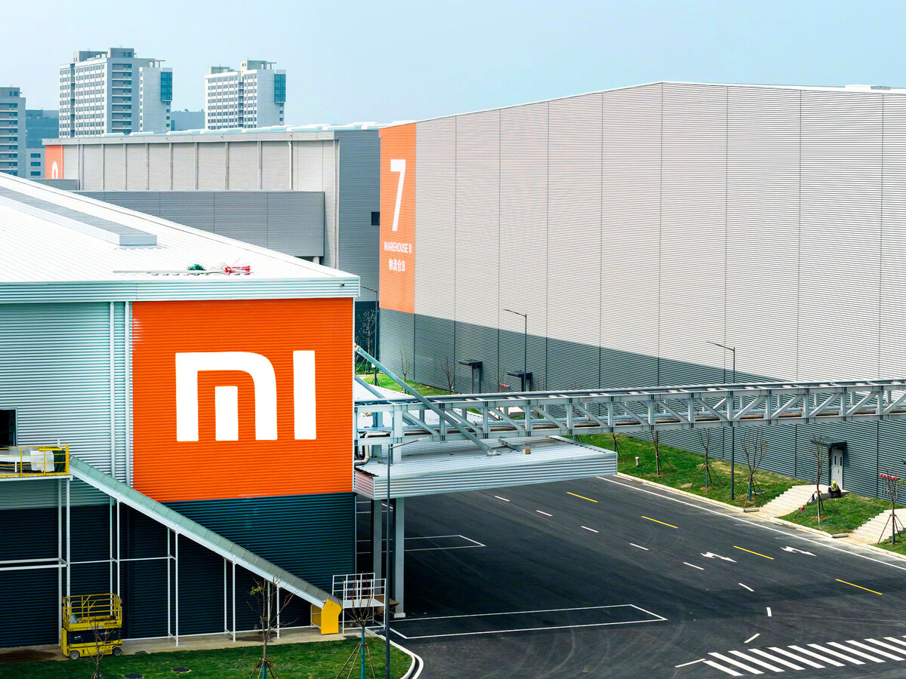
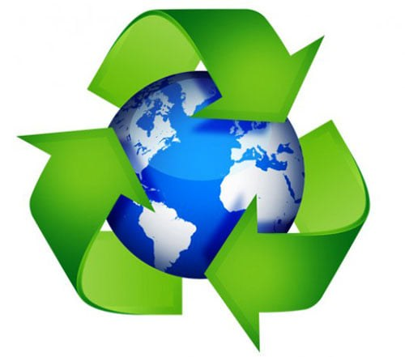
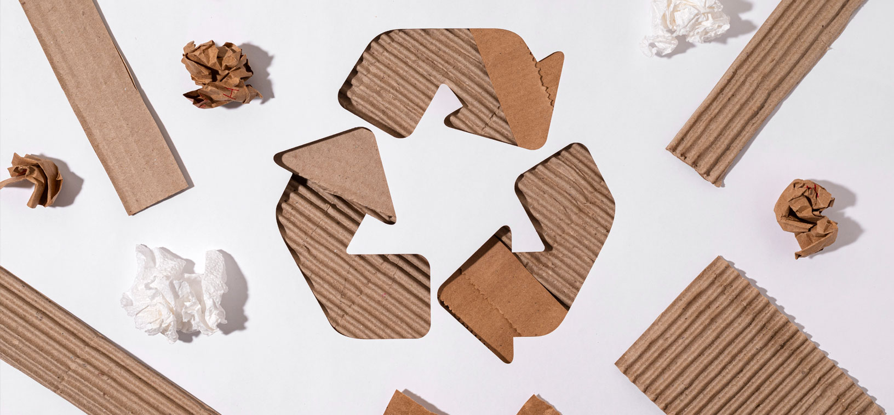

Economia Circular
Xiaomi incorpora progressivament els principis de l’Economia Circular en la seva estratègia de transformació digital. L’empresa treballa per reduir residus, allargar la vida útil dels productes i optimitzar recursos mitjançant disseny modular i programes de reciclatge.
A través del Pla de Transformació Digital, Xiaomi avança cap a un model més sostenible que combina innovació tecnològica amb responsabilitat ambiental.
Aspectes clau de l’Economia Circular a Xiaomi

Disseny Modular
Facilita la reparació i actualització de components.
Actualitzacions de Software
Allarga la vida útil dels dispositius.

Reutilització de Materials
Ús de materials reciclats en nous productes.
Activitats i Anàlisi
- Estableix les diferències entre l’Economia Lineal i l’Economia Circular aplicades a Xiaomi.
- Analitza com HyperOS i la 4a Revolució Industrial contribueixen a la sostenibilitat.
- Identifica les iniciatives de reciclatge i disseny ecològic de l’empresa.
- Valora les millores introduïdes en la cadena de subministrament.